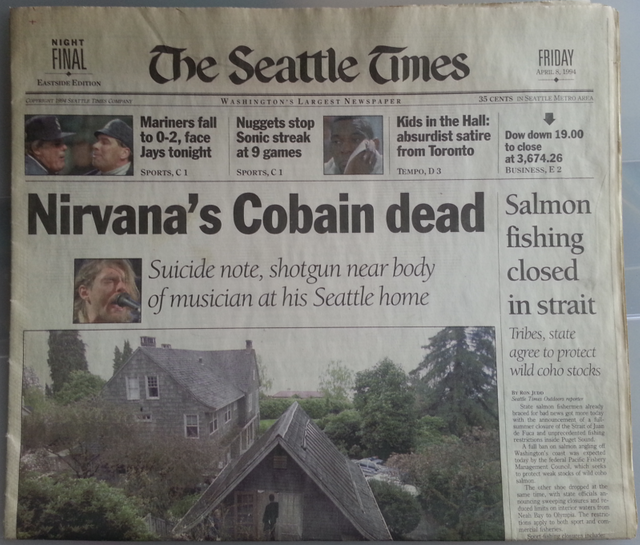

커트코베인의 죽음
- 커트코베인
- 너바나(미국밴드)
- 커트코베인의 죽음
미국 신문사 시애틀 타임즈에서 보도된 기사(사진)
1994년 4월 8일, 코베인은 시애틀의 집에서 시신으로 발견되었다.
경찰은 사망 추정시간이 4월 5일 이라고 결론을 내렸다. 커트 코베인의 자살은 수많은 논란을 몰고 왔다. 일단 경찰은 '하나뿐인' 문이 안쪽에서 잠긴 점, 유서의 존재, 타인의 지문이 없는 점 등을 들어서 자살이라고 발표하였으나
어떤 사람들은 문이 하나가 아니라 두 개인 점, 유서의 끝 글씨체가 다르다는 점, 총에도 지문이 없다는 점, 코베인의 몸에 엄청난 양의 헤로인이 들어있었던 점 등을 들어 타살되었다고 주장했다.
타살의 배후에는 코트니 러브나 기획사가 있다는 주장도 제기되었다. EI Duce 라는 한 무명 락 뮤지션이 어떤 한 인터뷰에서 " 코트니 러브가 나에게 커트를 죽이면 500만 달러를 준다고 한 적이 있어. " 라고 말하기도 했다.
하지만 아직까지 정확한 진실은 밝혀진 적이 없다. 코베인의 시신은 화장되어 일부는 코트니 러브가 가졌고, 일부는 뉴욕으로 갔다가 워싱턴 주로 돌아왔다.
그런데, 한 언론 기사에 따르면 커트 코베인의 유해 일부분이 도둑질 당했다고 전해졌다. 그리고 한 미술가는 자신이 커트 코베인의 유해를 가지고 있다면서 이 유해로 담배를 피우겠다고 해서 큰 논란이 되었다.